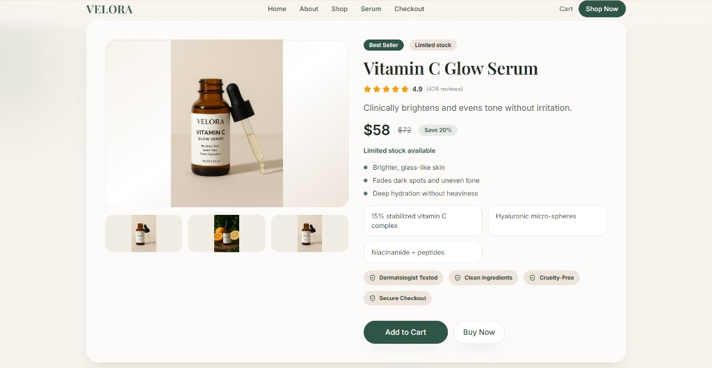
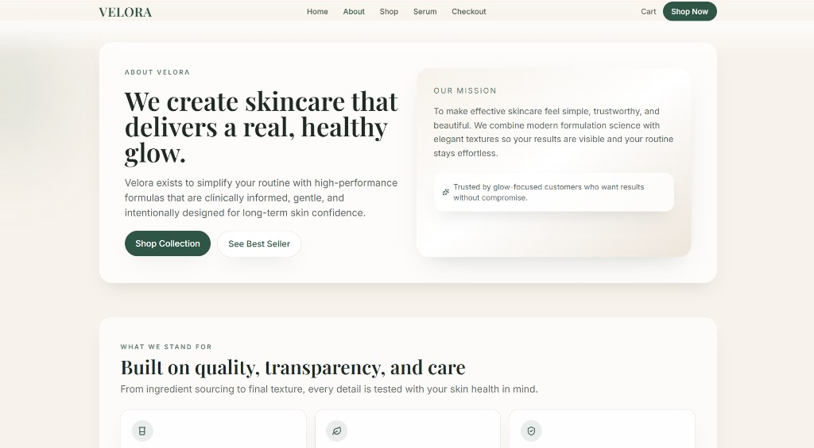

Skincare e-commerce
Velora
A skincare brand site built to turn browsers into buyers — premium visuals, trust-led content, and a clear product-to-checkout path.

A skincare brand site built to turn browsers into buyers — premium visuals, trust-led content, and a clear product-to-checkout path.
Velora needed an online store that matched a clean, modern identity — not a generic template. We designed and built a conversion-focused experience across home, product, and about pages.
The site emphasizes product value quickly: storytelling in the hero, ingredient-led detail, trust signals, and frictionless purchase actions.


Translate a premium skincare brand into a digital store that feels elevated, trustworthy, and easy to buy from on any device.
We structured the journey around clarity: strong hero narrative, focused product pages, trust indicators, and a streamlined path to cart and checkout.
We design and ship commerce experiences that look premium and convert cleanly.